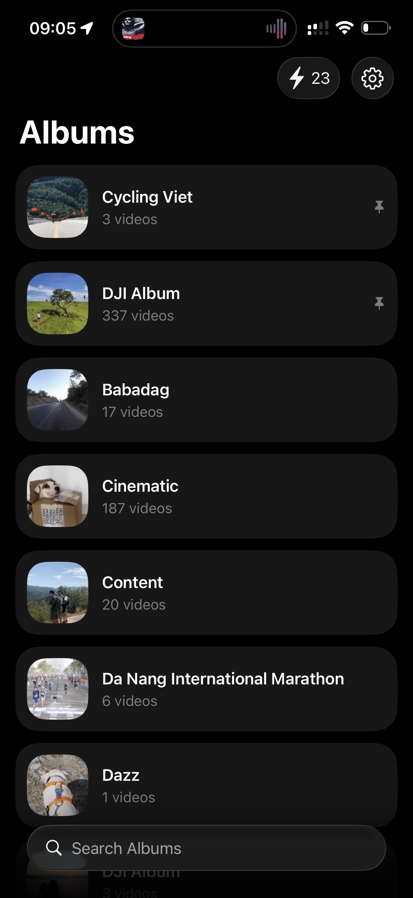
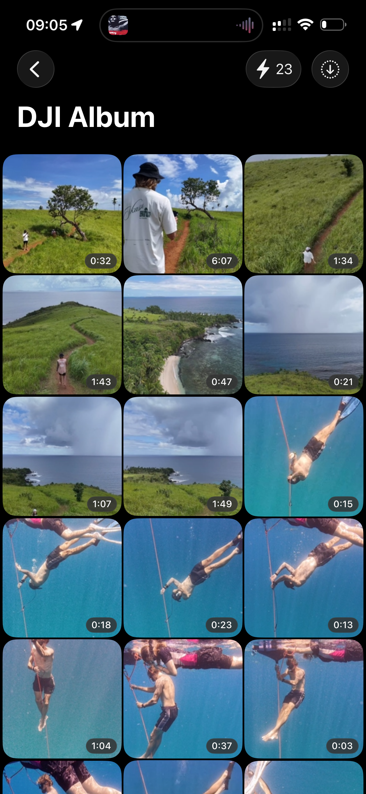
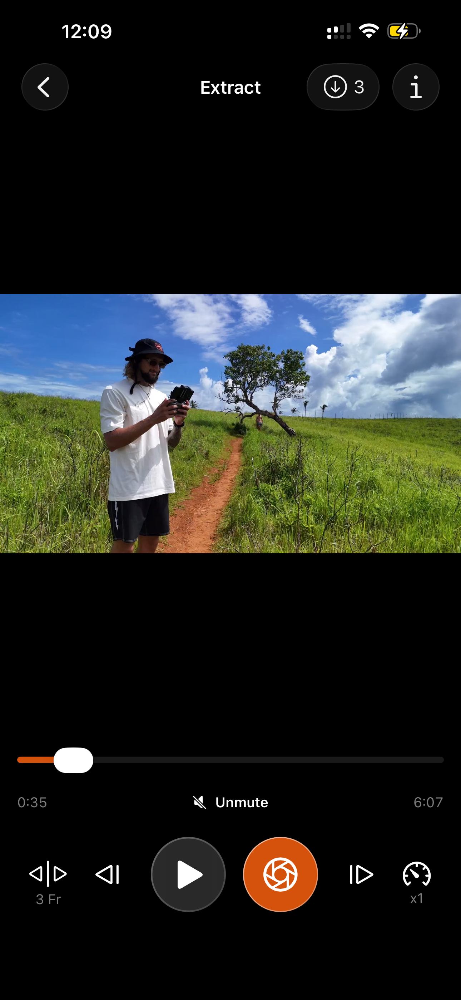
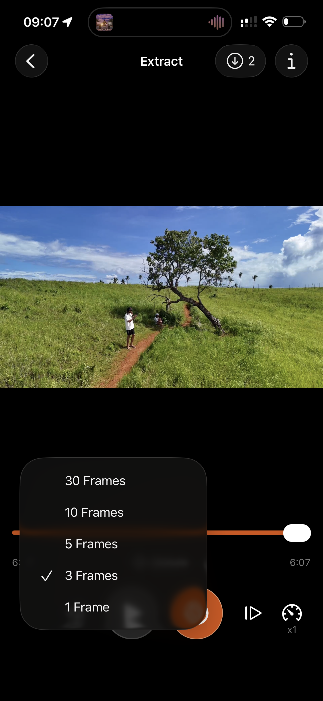
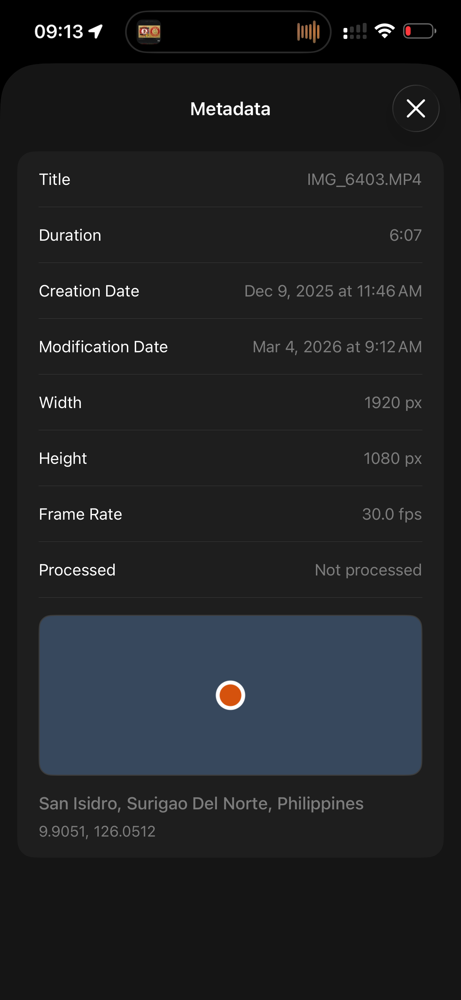
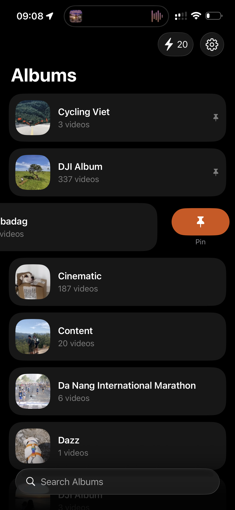
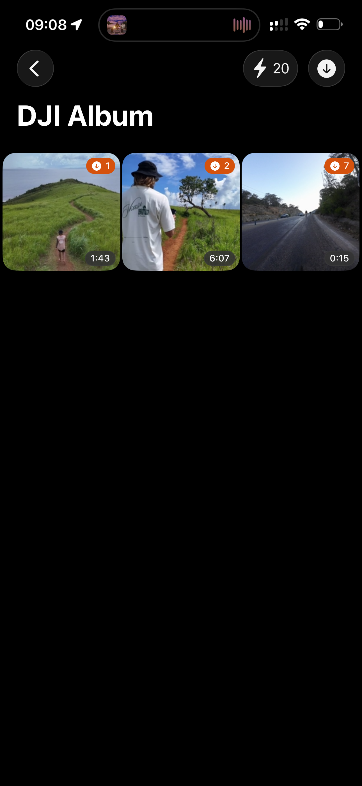

Sometimes a video contains the perfect moment — a facial expression, a movement, a landscape, or a scene you didn’t have time to photograph.
The good news is that you can extract a frame from a video for free and save it in original quality.
With the Fliqer frame grabber, turning video into image takes just a few seconds.
In this guide you’ll learn how to grab a frame from a video, save it as a photo, and keep the original quality and metadata.
You can also use our online video frame extractor in the browser — no app required.
Download the Fliqer Frame Grabber
The easiest way to extract frames from video is to use Fliqer.
Fliqer works as a fast and precise frame grabber, allowing you to open any video from your library and instantly convert video to image.
After installing the app:
- Open Fliqer
- Go to your video album
- Select the video you want to work with
- Find the perfect moment in the timeline
- Tap Capture Frame
The image will be saved directly to your Photos library or to the Fliqer album, depending on your settings.
This allows you to easily grab frames from video and collect the best moments without exporting the entire clip.



Precise Frame Selection
Sometimes the perfect moment lasts only a fraction of a second.
To help you extract the exact frame from a video, Fliqer includes frame step controls.
You can move through the video timeline with steps ranging from:
- 1 frame
- up to 30 frames per step
This makes it easy to precisely grab the right frame from video, which is especially useful for sports, motion shots, or cinematic moments.

Original Metadata and Image Formats
Only in iOS App
When you extract a frame from video using Fliqer, the saved image keeps the original metadata from the source video.
This may include:
- original resolution and quality
- date and time
- location information
- other EXIF metadata
The captured frame can also be saved in different image formats depending on your workflow:
- PNG — best for maximum quality and editing
- JPEG — smaller file size with universal compatibility
- HEIC — efficient compression with high quality (native Apple format)
Because of this, the image behaves just like a normal photo in your library and can be easily shared, edited, or archived.



A Convenient Workflow for Videos
Fliqer is designed to make working with videos more convenient.
Inside the app you can:
- quickly see which videos you already processed
- sort videos you have worked with
- keep track of extracted frames
Inside the player you can also open the capture history, which shows the timestamps where frames were grabbed.
From there you can instantly jump back to those moments in the video, making it easy to continue extracting frames from longer clips.


Available on Apple Devices and in Your Browser
Fliqer is available on:
- iPhone
- iPad
- Mac with Apple Silicon
You can also use the Fliqer frame grabber in your browser.
The web tool allows you to extract frames from video online on any device and convert video to image in high quality.
However, frames exported from the browser do not preserve the original metadata from the source video.
If you often need to grab frames from video, create references, or save moments from clips, Fliqer makes the process fast, precise, and organized.
Ready to try it yourself?
Use our online frame grabber or video frame extractor directly in your browser — free, no upload, no signup. Or download the Fliqer app for iPhone, iPad, and Mac.